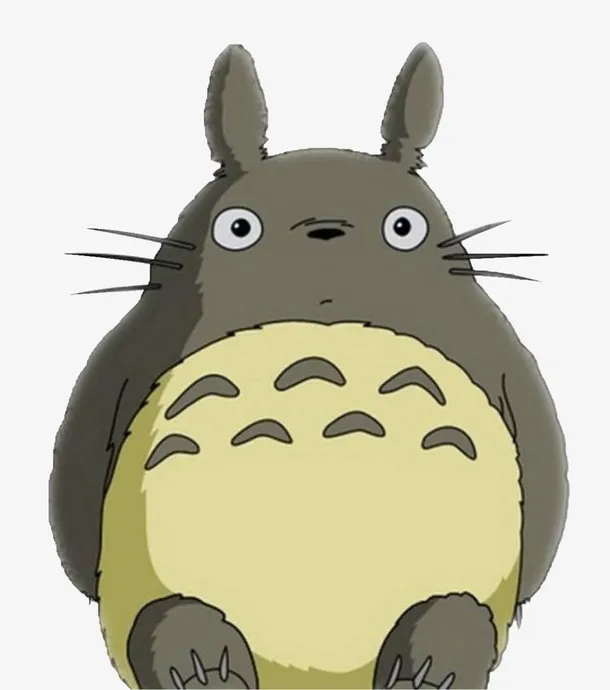
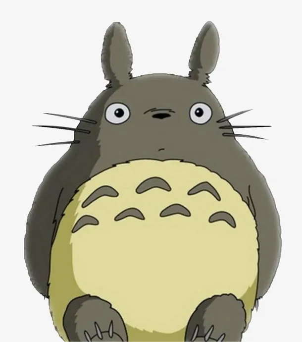

✨ 治愈日常类动漫
《夏目友人帐》
绿川幸创作的治愈系神作，讲述了能看见妖怪的少年夏目贵志，继承外婆的“友人帐”后，与妖怪们相遇、和解的故事。画面清新、节奏舒缓，核心是“温柔”与“救赎”，治愈了无数观众的内心。
《龙猫》（となりのトトロ）
宫崎骏执导的经典动画电影，以乡村为背景，讲述了小梅和小月两姐妹与龙猫相遇的奇幻故事。没有激烈的冲突，只有温暖的亲情、纯真的童心和自然的美好，是治愈系动画的天花板。
绿川幸创作的治愈系神作，讲述了能看见妖怪的少年夏目贵志，继承外婆的“友人帐”后，与妖怪们相遇、和解的故事。画面清新、节奏舒缓，核心是“温柔”与“救赎”，治愈了无数观众的内心。
宫崎骏执导的经典动画电影，以乡村为背景，讲述了小梅和小月两姐妹与龙猫相遇的奇幻故事。没有激烈的冲突，只有温暖的亲情、纯真的童心和自然的美好，是治愈系动画的天花板。